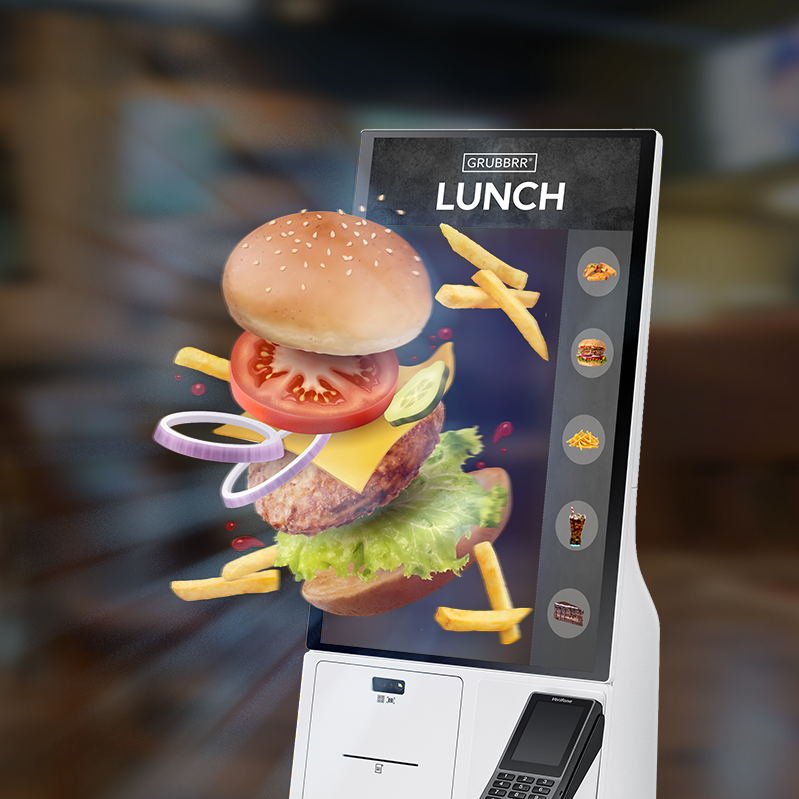
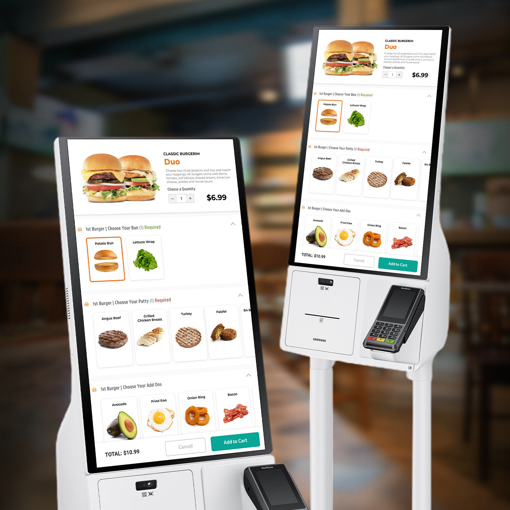

Samsung Partnership Page - Key Visuals
Grubbrr formed a strategic partnership with Samsung to provide the most advanced all-in-one ordering solution currently on the market. Powered by Grubbrr's intuitive and affordable software, the Samsung kiosk is fully equipped with an HD display, a printer, a scanner, and a credit card terminal with NFC capabilities. This webpage was created to promote the partnership and describe exactly how the product works. To learn more, visit the site at grubbrr.com/samsung.

Key visual for header of landing page

Product images
Created everything in this 3D scene
and brought it together in Blender (food locker model provided
by Frank Mayer). The goal of this this render was to minimalistically
showcase Grubbrr's complete ecosystem of products with Samsung
hardware in a restaurant setting.

↑
Back to Top